Replacing Cover Bowl
41 63 003 - Replacing cover bowl

Special tools required:
- 00 9 321

Necessary preliminary tasks:
- Remove flap for fuel filler neck [1][2]41 63 000 Removing and Installing Flap For Fuel Filler Neck
- Remove servodrive for tank filler flap Removing and Installing/Replacing Servodrive For Tank Filler Flap
Note:
Carry over schematic representation to the relevant vehicle type.

Important!
Deformation of the sheet metal flanges in the side panel and the wheel arch results in permanent vehicle leakage. Carry out removal/installation with great care.
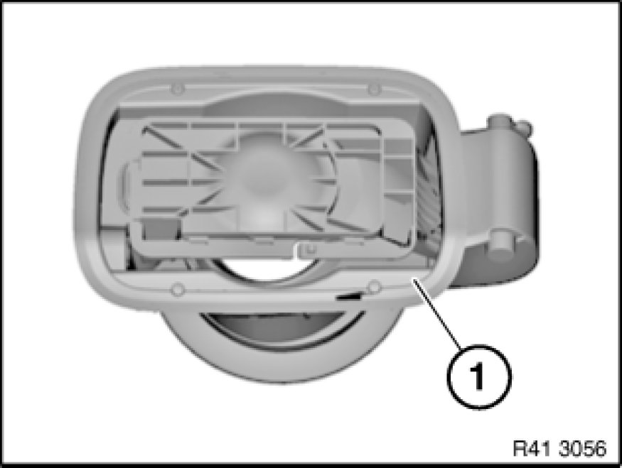
Following new body parts are required:
- (1) Filler bowl
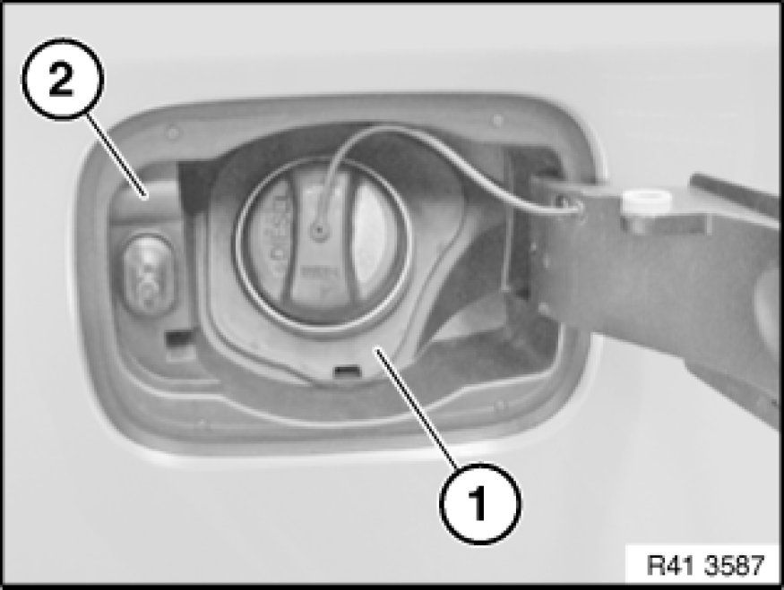
Release rubber collar (1) from cover bowl (2) by pressing inward.
Note:
Rubber collar (1) remains attached to vehicle.
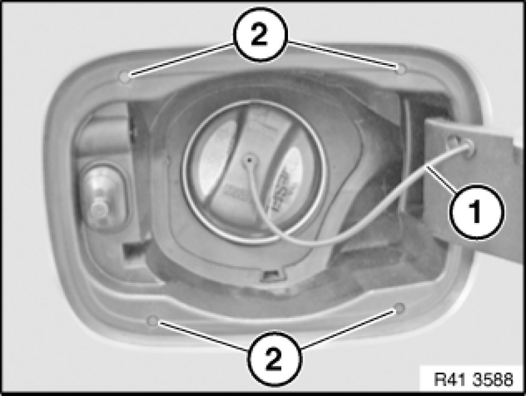
Press retaining strap (1) inwards and remove.
Remove rubber pads (2).
Note:
Rubber pads (2) are replaced with a new cover bowl.
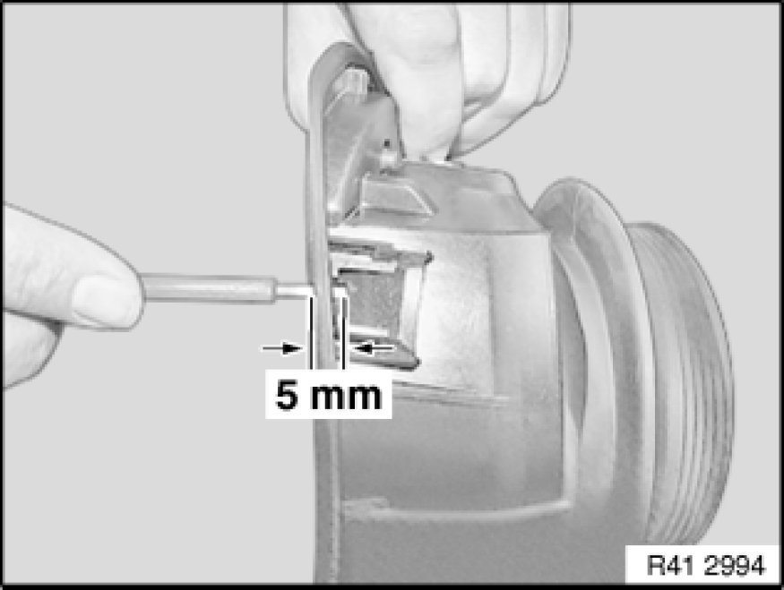
Note:
For purposes of clarity, picture shows cover bowl removed.
Insert screwdriver to a depth of max. 5 mm and unlock cover bowl catch.
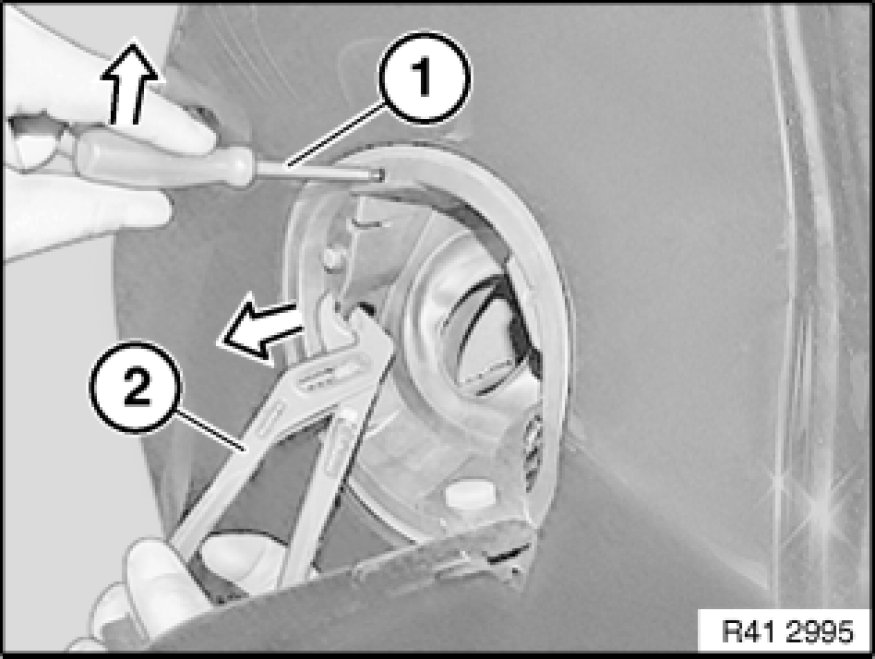
Keep cover bowl tensioned with pliers (2).
Unlock catches individually with screwdriver (1).
Unlock catches in following order:
1. Top left
2. Bottom left
3. Top right
4. Bottom right
Move screwdriver in opposite direction at both lower catches.
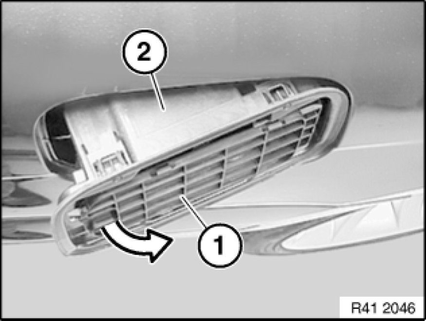
Close hinge arm (1).
Important!
Do not damage sheet metal flange of side panel.
Carefully twist out cover bowl (2) at first at rear in direction of arrow from side panel and remove.
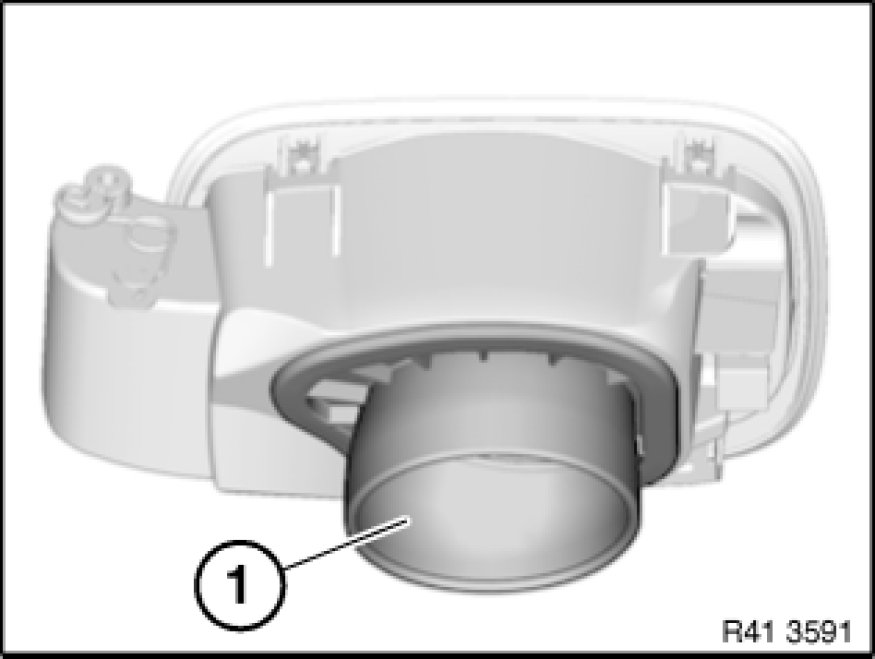
Preparation of new part:
Remove rubber collar (1) from new part.
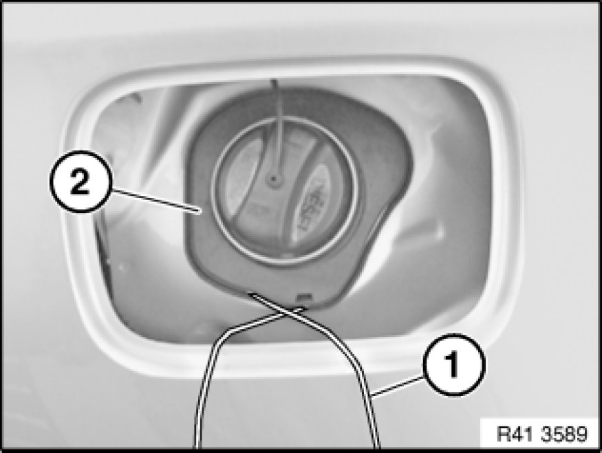
Installation:
Fit approx. 0.5 m long cable (1) in groove on rubber collar (2).
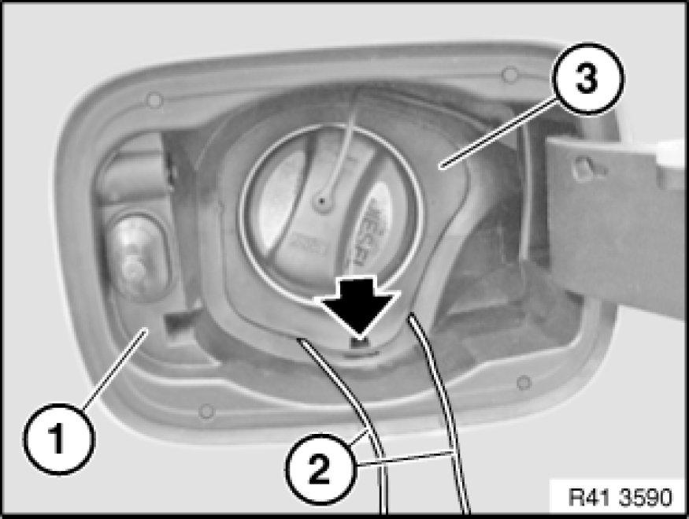
Installation:
Install cover bowl (1).
Thread ends of cable (2) outwards.
Align bottom rubber collar (3) with recess (see arrow).
Pull rubber collar (3) over the cover bowl by pulling the ends of cables (2).
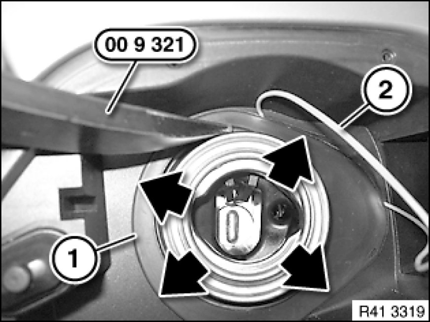
Installation:
Slowly pull out cable ends (2).
Press rubber collar (1) into groove with special tool 00 9 321 .
Installation:
Cover bowl (2) must snap into place 4 times.
After installing, carefully check cover bowl at clips for secure fit.
There must be no discernible gap between the sealing lip of the cover bowl and the side panel in the area.
Make sure rubber collar (1) is correctly seated (watertightness).
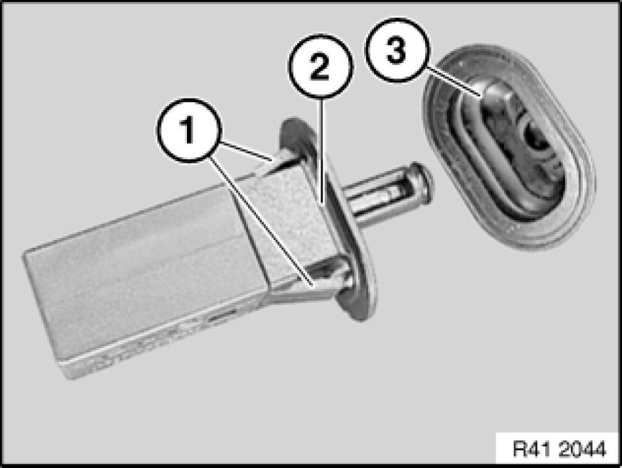
Installation:
Catches (1) on ejector (2) must not be damaged.
Check protective cap (3) for correct seating.
(Watertightness!)